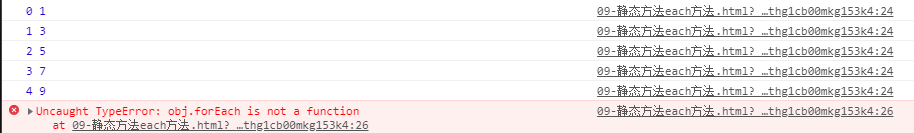
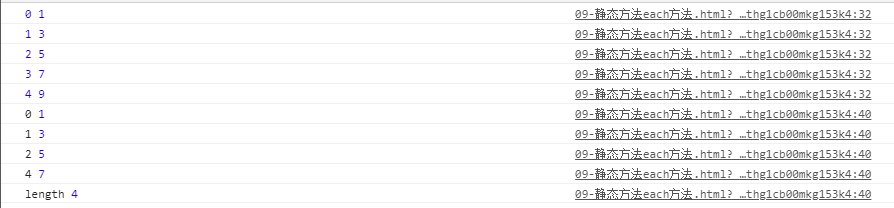

jQueryt静态方法详解 ==> each
==> map
==> trim
==> isArray
==> isFunction
==> isWindow
==> holdReady
一，each方法
注：为了更好的展示，首先创建一个数组和一个对象 (let 与 arr 区别详解见 JavaScript笔记 （一）)
1 let arr = [1, 3, 5 ,7, 9];
2
3 let obj = {
4 0:1,
5 2:3,
6 3:5,
7 4:7,
8 length:4,
9 };
对于原生JS，each方法只适合遍历数组，而不适合遍历伪数组（伪数组详解见笔记（1））
代码示例
1 arr.forEach(function (value, index){
2 console.log(index, value)
3 })
4
5 obj.forEach(function (value, index){
6 console.log(index, value)
7 })结果：

说明
forEach方法的第一个参数为遍历到的元素，第二个参数为当前遍历的索引
原生JS的forEach方法只能遍历数组，而不能遍历伪数组
对于jQuery，each方法既适合遍历数组，也适合遍历伪数组
代码示例
$.each(arr, function (index, value){
console.log(index, value);
})
$.each(obj, function (index, value){
console.log(index, value);
})结果

说明
jQuery的 each 方法 第一个参数为 正在遍历元素的索引，第二个参数为遍历到的元素
jQuery的 each方法既适合遍历数组，也适合遍历伪数组
二，map静态方法
简而言之，map静态方法 和 each静态方法大体上相似，都是 JS的 map静态方法只能遍历数组，不能遍历伪数组，而jQuery却都能
两者之间还有的区别就是
each 静态方法的返回值就是 遍历谁就返回谁
map 静态方法的返回值 就是一个空数组
因此，each静方法不支持在回调函数中对遍历的数组进行改造
map静态方法可以在回调函数中通过 return 对遍历的数组进行处理，然后生成一个新的数组返回
1 arr.map(function(value, index, array) {
2
3 })
4 # 基本语法格式，参数见文生意
5 $.map(arr, function(value, index) {
6
7 })三，trim 静态方法
直白点说，这就是一个将字符串两端空格去掉，并且返回一个去掉空格的新的字符串的静态方法
$.trim(str)四，isArray、isFunction、isWindow 静态方法
这三个静态方法都是用来判断的，返回值均为 True/False
其中 isArray()静态方法用来判断是否为 真数组
isFunction()静态方法用来判断是否是 函数
isWindow 静态方法用来判断是否为 window对象
补充：对于 $.isFunction(jQuery) 的判断，其结果为 True
原因：本质上 jQuery 框架 也是一个函数，其大体构造为
1 (function (window, undefined) {
2
3 })(window); // 立即执行函数且，从此可以得到一个立即执行函数的写法
1 function test() {
2
3 }
4 test()
5
6 // ==>
7 (function test() {
8
9 })(window);
四，holdReady 静态方法
作用：暂停 入口函数的执行
参数：true/ false
1 $.holdReady(true) // 使得下面的入口函数不执行
2
3 $(document).ready(function(){
4 alert("ready");
5 })
6
7
8 let btn = document.queryselector("button");
9 btn.onclick = function() {
10 $.holdReady(false); // 点击按钮，使得上面的入口函数得以再次执行
11 }